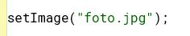

En Greenfoot todos los personajes heredan de la clase padre Actor, cuya especificación se puede consultar en esta página. A continuación se explicarán algunos de los métodos de esta clase que pueden ser más útiles. Al igual que con la clase World, en este documento no se hace un repaso exhaustivo de todas las funciones, solo se describen algunas de las más significativas.
Proyecto programación y computación - Juego con greenfoot
3ª fase. Personajes (elección e implementación del comportamiento de los personajes)
void setImage
Este procedimiento permite cambiar la imagen de un actor. Existen dos opciones:
- A partir del nombre de un archivo de imagen (el fichero deberá estar en la carpeta images del proyecto)
- Usando un objeto de tipo GreeenfootImage
Por ejemplo, si tenemos el archivo fotoActor.jpg y queremos que sea la imagen del actor, tendríamos que incluir el siguiente código:

La imagen se puede cambiar al principio (en el constructor) o en cualquier otro método. Por ejemplo, cuando se detecte una colisión con un objeto podremos modificar la foto del actor y actualizarla a otra distinta.
public void act()
Este método es el que incluye las instrucciones para que el personaje se comporte como queramos. Por ejemplo, que gire, que se mueva, que vaya rotando, que rebote cuando toque con un borde,... El procedimiento se llama automáticamente cuando se presionan los botones Act o Run. La diferencia entre uno y otro es que con Act las instrucciones se ejecutan solo una vez, mientras que con Run se ejecutarán como si estuvieran en un bucle
public void move (int distance)
Con este método podemos el actor se moverá la distancia (un número de celdas) que indique el parámetro. Por ejemplo, si usamos move(2) se moverá dos celdas. Si el valor de la distancia es negativo, el movimiento será hacia atrás.
La dirección del movimiento será la que tenga actualmente el personaje (horizontal por defecto). Para modificar dicha dirección se puede usar el método setRotation(int)
public boolean isAtEdge()
En un juego es fundamental saber cuándo un personaje está tocando el borde del escenario. Para ello, Greenfoot proporciona el método isAtEdge(). Esta función devuelve true si el objeto ha llegado a un borde y false en caso contrario. Se puede utilizar para implementar, por ejemplo, un giro cuando llegue a un extremo del escenario.
public void turn(int amount)
Este procedimiento hace que el personaje gire. En concreto, se girará la cantidad de grados que se indique como argumento. Por ejemplo, si se ejecuta turn(90), el personaje girará 90º. Si el número de grados es positivo el giro será en sentido horario (el de las agujas del reloj). Si el parámetro es negativo, el giro será antihorario (sentido contrario de las agujas del reloj)
public void turnTowards (int x, int y)
Además de poder girar el personaje un número determinado de grados, también es posible hacer que el actor gire en una determinada dirección. Para ello, usaremos el método turnTowards (int x, int y). Cuando se llama a este procedimiento, el personaje girará en la dirección (x,y). Por ejemplo, si se ejecuta turnTowards (20,10), el personaje girará hacia la posición de la celda (20,10)
{kind=link}
{kind=link}
{kind=link}
Tarea 3
En esta tarea crearemos los personajes del juego y definiremos cómo se van a mover.
Tendremos que:
- Crear los personajes que necesitemos para el juego (una clase para cada uno de ellos)
- De cada personaje se determinará:
- Su imagen (o imágenes, si queremos que cambie conforme avance el juego). Deberán ser de elaboración propia o libres de derechos
- El movimiento que va a realizar
- Cómo actuará cuando toque un borde del escenario
Qué se entrega en esta fase
- Url del repositorio donde estarán todos los archivos del proyecto de greenfoot
- Documento explicando brevemente cada personaje, incluyendo:
- Procedencia de las imágenes utilizadas (elaboración propia o url donde se han obtenido)
- Descripción del movimiento y del modo de actuación cuando toque un borde del escenario
Obra publicada con Licencia Creative Commons Reconocimiento Sin obra derivada 4.0